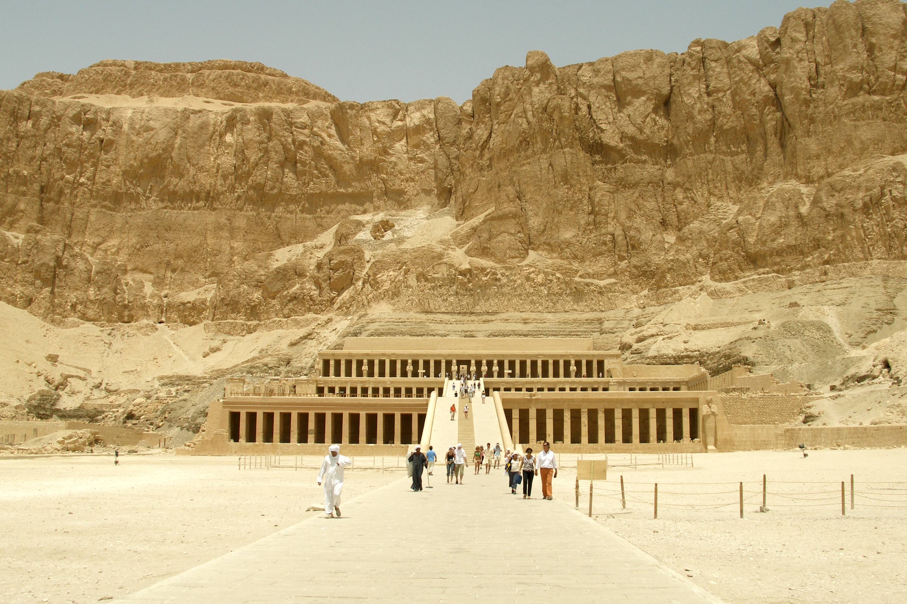

Thebes (No-Amon)

- Find Name
- Thebes (No-Amon)
- Description
- The great city of Upper Egypt, biblical No and No-Amon, on both banks of the Nile at modern Luxor, sacred to the god Amun — its Egyptian name means, in effect, the City of Amun. In the New Kingdom it was Egypt's religious capital, home to the vast temple complexes of Karnak and Luxor on the east bank and the mortuary temples and royal tombs of the west bank, including the Valley of the Kings. Nahum's description fits it exactly: a city 'situate among the rivers, that had the waters round about it, whose rampart was the sea, and her wall was from the sea' (Nahum 3:8), the Nile and its canals being its defence. In 663 BC Ashurbanipal of Assyria sacked Thebes and carried its wealth to Nineveh — the desolation Nahum points to when he asks Nineveh, 'Art thou better than populous No?'
- Historical Period
- Middle and New Kingdom Egypt, c. 2000-1070 BC (city occupied far longer)
- Evidence Class
- Direct
- Interpretations
- Scholars agree Thebes is biblical No / No-Amon; the KJV's 'populous No' renders No-Amon, the City of Amun. The Karnak Battle of Kadesh Reliefs and the Karnak Geographic List of Seti I are separate entries for individual monuments; this entry is for the city as a whole. The exact campaign Nahum had in mind — most likely Ashurbanipal's sack of 663 BC — is the majority reading, not a certainty, and is stated as such.
- Alternative Names
- No; No-Amon; Populous No; Diospolis Magna
- Related Places
- Related Books
- Related People
- Scripture Illuminated
- Biblical Significance
- Thebes is the prophets' measuring rod for imperial pride. Nahum uses its fall to warn Nineveh that no city, however watered, allied, and wealthy, is beyond judgment; Jeremiah names 'the multitude of No' — Amon of No — among those God will punish with Pharaoh and Egypt (Jeremiah 46:25); Ezekiel pronounces judgments on No alongside Zoan and Memphis (Ezekiel 30:14-16). The excavated temples make the warning concrete: this was the richest religious city of its age, and it fell.
- Artifact Date
- Temples of Karnak and Luxor, chiefly New Kingdom, 16th-11th centuries BC; sacked by Ashurbanipal, 663 BC
- Current Location
- In situ, Luxor, Egypt (Karnak and Luxor temples, Valley of the Kings, and west-bank mortuary temples)
- Date Discovered
- Known continuously; systematically recorded from the 19th century (Wilkinson and successors)
- Discovery Location
- Luxor, Upper Egypt, on both banks of the Nile
- Timeline Era
- Exodus and Wilderness
Awaiting Review Not yet checked against scholarly sources. Treat its claims as provisional until this entry is reviewed. About verification
Last reviewed: not yet reviewed